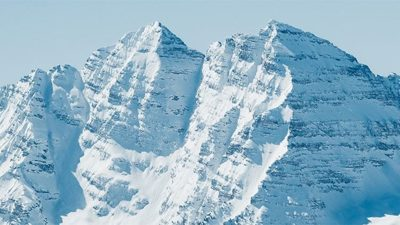


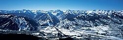

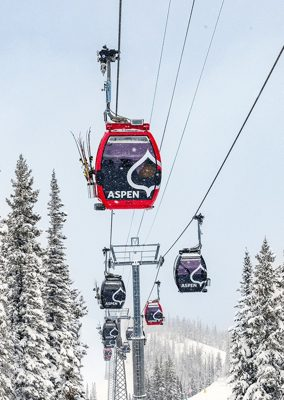

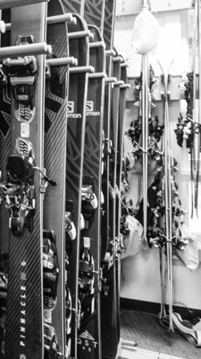

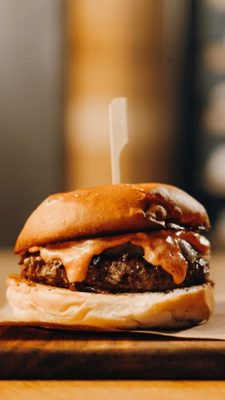


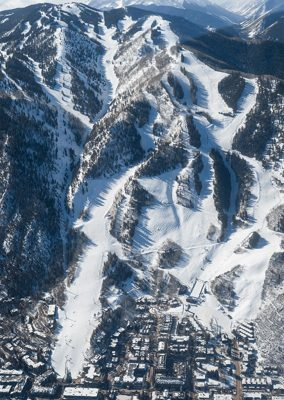
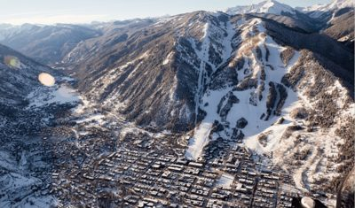
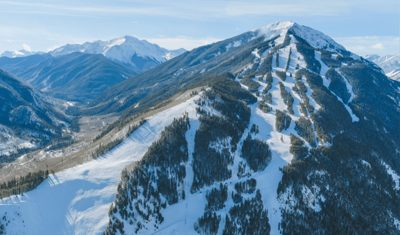
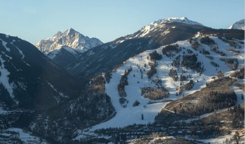
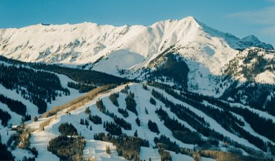
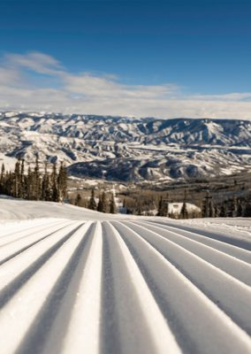
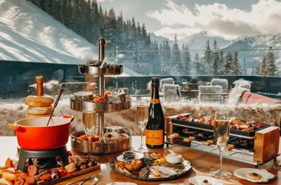
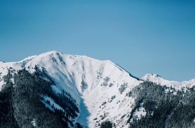

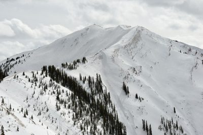

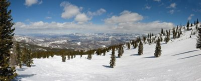

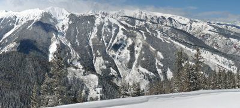

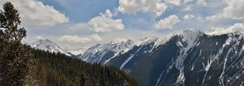

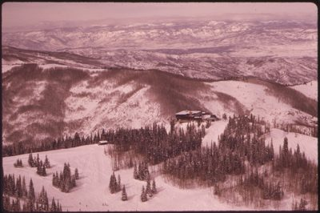

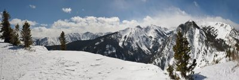
.jpg){kind=link}
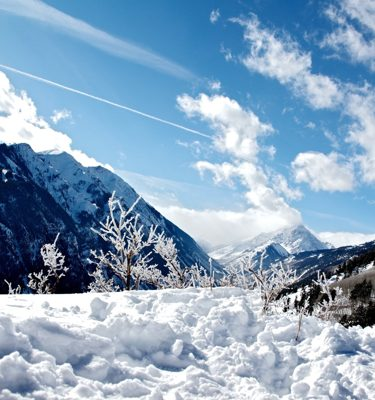

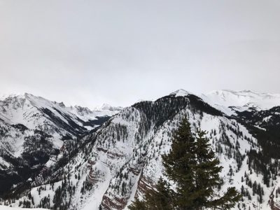

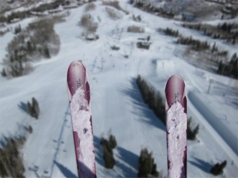

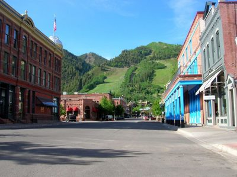

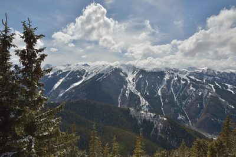

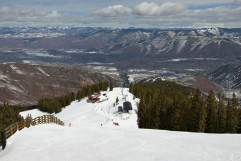
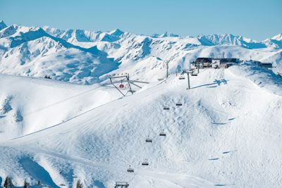
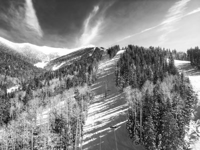
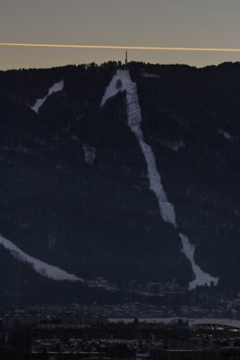
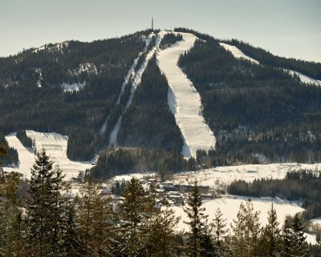
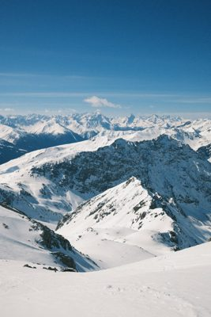
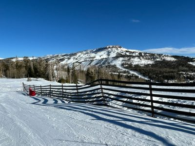
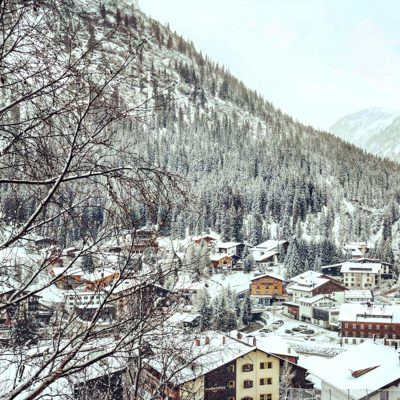
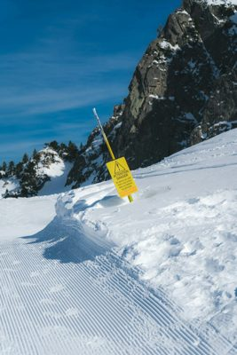
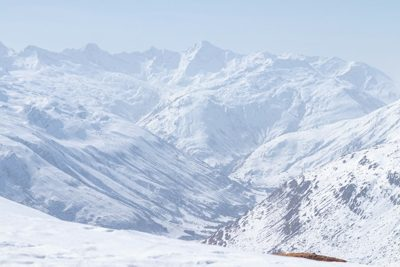
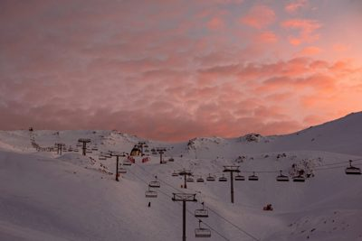
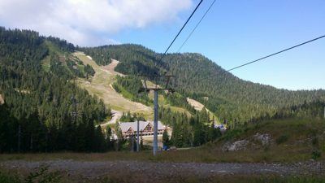
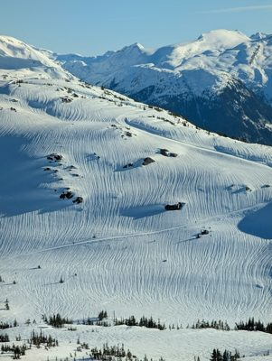
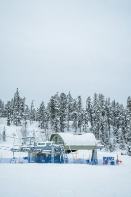
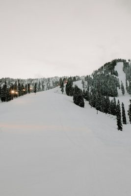
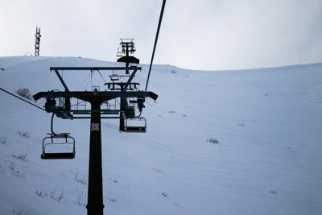
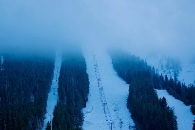
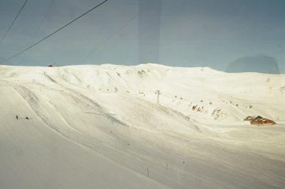
ski-aspen — research
source: https://www.aspensnowmass.com/
title: Aspen Snowmass | One of the Best Ski Resorts in Colorado
meta description: Ski four mountains at Aspen Snowmass, one of the best ski resorts in Colorado. World-class terrain, ski school, dining & more in Aspen and Snowmass Village.

fonts: n/a
css hexes: #bf3c2c(2), #18911f(2)
headings
- Four Mountains
- Renew the Mind, Body, and Spirit
- Where Journeys Begin
- Explore All Four
- Stay at Aspen Snowmass
- More Info
- Need Support?
- Stay in the Know
- Welcome to the community
- Contents
- Aspen/Snowmass
- References
- External links
copy
Aspen Snowmass | One of the Best Ski Resorts in Colorado Aspen Logo 26-27 Season Passes Winter Lift Tickets Lodging Book Now Winter Season Passes Winter Lift Tickets Winter Lessons Winter Rentals Winter Activities Lodging Packages Shop Retail Four Mountains Discover Visit Aspen Logo Site Search Four Mountains Aspen Mountain Aspen Highlands Buttermilk Snowmass Mountain Updates Mountain Cameras Discover Who We Are Arts & Culture Stories & Guides Sustainability Visit 26-27 Season Passes Winter Lift Tickets Winter Lessons Winter Rentals Winter Activities Dining Events Packages and Deals Lodging Retail Shop Contact Us My Account Four Mountains Back to Menu Four Mountains Aspen Mountain Aspen Highlands Buttermilk Snowmass Mountain Updates Mountain Cameras Discover Who We Are Arts & Culture Stories & Guides Sustainability Visit 26-27 Season Passes Winter Lift Tickets Winter Lessons Winter Rentals Winter Activities Dining Events Packages and Deals Lodging Retail Shop Contact Us My Account Renew the Mind, Body, and Spirit Four mountains, two towns, and one unforgettable experience at the confluence of nature, culture, and recreation. Aspen Leaf Logo Pause Vimeo pause Vimeo play Where Journeys Begin 2026-2027 Season Passes Choose from unlimited access, weekday skiing, or flexible multi-day options with the new Flex Pass. Lift Tickets Explore all four Aspen Snowmass mountains on one lift ticket, with terrain for every skier and rider. Book 30 days in advance and save up to 25% on four or more days. Ski and Snowboard Rentals Take the hassle out of rentals with convenient locations at all four mountains, plus free overnight storage and transfers. Book 30 days in advance and save up to 20%, or 7 days ahead for up to 10% off. Ski and Snowboard Lessons Learn from the best Pros in the industry, with private and group lessons for every ability. Personalized instruction, expert guidance, and savings when you book seven days in advance. Winter Activities Beyond the slopes, ride the Breathtaker Alpine Coaster, go tubing, or catch Ullr Nights under the stars. Every member of your group finds their adventure. Aspen Snowmass Dining From 15 restaurants across all four mountains, local ingredients make for global flavors. Choose grab-and-go or make it a leisurely day with fine dining. Winter Events This season marks 80 years of Aspen Snowmass. Celebrate with X Games, Snow League, the Toyota U.S. Grand Prix, and après all season long. Scroll left Scroll right Pause Vimeo pause Vimeo play Explore All Four Ride the gondola above and beyond to enjoy steep lines, groomed runs, and hidden glades with all trails leading back to the heart of Aspen, Colorado. Learn More Powder on Aspen Mountain Aerial View of Aspen Mountain A welcoming mountain with a wild spirit and dynamic terrain — including the legendary Highland Bowl — Aspen Highlands was born different. Learn More Aspen Highlands Powder Aerial View of Aspen Highlands A playground of greens, blues, stunning views, and a welcoming base area. Made for beginners, mastered by professionals, and enjoyed by all. At Buttermilk, it’s all-day recess. Learn More Aerial view of Buttermilk New Skier at Buttermilk Snowmass is bigger than the rest — 3,300+ acres, 96 trails, and room for families to spread out and write their own winter story. Learn More Empty groomers at Snowmass Aerial View of Snowmass Stay at Aspen Snowmass Family on the Balcony of Limelight Snowmass From slopeside lodges to full-service hotels
refs kept (people-screened)
- 00.jpg: A snow-covered mountain range with sharp peaks and steep slopes under a clear blue sky. | logo=False | palette ['#4c89aa', '#79a4bc', '#b7ced9', '#acc5d3', '#d9e1e5']
- 01.jpg: A snow-covered mountain range with sharp peaks and steep slopes under a clear blue sky. | logo=False | palette ['#4b89ab', '#b6cdd9', '#79a4bc', '#acc5d3', '#d9e0e4']
- 02.jpg: This is the logo for Aspen Snowmass, a well-known ski resort in Colorado. | logo=True | palette ['#ffffff', '#323132', '#fefefe', '#d6d6d6', '#fffdfe']
- 03.jpg: A panoramic view of snow-covered mountains under a clear blue sky. | logo=False | palette ['#5a8fba', '#9cc3de', '#132138', '#375271', '#496d93']
- 04.jpg: A ski lift with 'ASPEN' branding and logos is shown against a snowy mountain landscape with snow-covered trees. | logo=True | palette ['#dbe6f1', '#d5e2ef', '#7f787e', '#c4cbd2', '#e1ebf3']
- 06.jpg: A black and white image showing a row of skis with visible brand logos like 'Salomon' and 'Pinnacle' displayed in what appears to be a ski shop or rental facility. | logo=True | palette ['#d6d6d6', '#8d8d8d', '#212121', '#424242', '#5f5f5f']
- 09.jpg: A close-up of a juicy burger with melted cheese and sauce on a wooden surface. | logo=False | palette ['#754221', '#281b16', '#a57645', '#d29a5a', '#e6ba8e']
- 11.jpg: An aerial view of a snowy mountain range with ski slopes and a town at the base. | logo=False | palette ['#4a5e73', '#263b50', '#7d8b9a', '#b5bcc4', '#dadde0']
- 13.jpg: An aerial view of a snowy mountain town surrounded by forested peaks and ski slopes. | logo=False | palette ['#595c69', '#7a7d89', '#313849', '#a4a3aa', '#dcdcdc']
- site01.jpg: A snow-covered mountain range with sharp peaks and steep slopes under a clear sky. | logo=False | palette ['#4c89aa', '#79a4bc', '#b7ced9', '#acc5d3', '#d9e1e5'] | SOURCE site: Aspen Snowmass | One of the Best Ski Resorts in Colorado — www.aspensnowmass.com https://www.aspensnowmass.com/
- site03.jpg: A ski lift with 'ASPEN' branding transports skiers through a snowy forested mountain landscape. | logo=True | palette ['#dbe6f1', '#d5e2ef', '#7f787e', '#c4cbd2', '#e1ebf3'] | SOURCE site: Aspen Snowmass | One of the Best Ski Resorts in Colorado — www.aspensnowmass.com https://www.aspensnowmass.com/
- site10.jpg: An aerial view of a snowy mountain range with ski slopes and a town at the base. | logo=False | palette ['#4a5e73', '#263b50', '#7d8b9a', '#b5bcc4', '#dadde0'] | SOURCE site: Aspen Snowmass | One of the Best Ski Resorts in Colorado — www.aspensnowmass.com https://www.aspensnowmass.com/
- site12.jpg: An aerial view of a snowy mountain town with ski slopes and forested hills surrounding it. | logo=False | palette ['#595c69', '#7a7d89', '#313849', '#a4a3aa', '#dcdcdc'] | SOURCE site: Aspen Snowmass | One of the Best Ski Resorts in Colorado — www.aspensnowmass.com https://www.aspensnowmass.com/
- site14.jpg: An aerial view of snow-covered mountains with ski slopes and forested areas under a clear blue sky. | logo=False | palette ['#204359', '#3f6a88', '#6e95b7', '#c2d9ec', '#aac5dd'] | SOURCE site: Aspen Snowmass | One of the Best Ski Resorts in Colorado — www.aspensnowmass.com https://www.aspensnowmass.com/
- site15.jpg: A breathtaking aerial view of snow-covered mountains with ski slopes and forested valleys under a clear blue sky. | logo=False | palette ['#1d2e3b', '#344452', '#607382', '#b3d5de', '#a2beca'] | SOURCE site: Aspen Snowmass | One of the Best Ski Resorts in Colorado — www.aspensnowmass.com https://www.aspensnowmass.com/
- site18.jpg: A breathtaking aerial view of snow-covered mountains with ski slopes and forested areas under a clear blue sky. | logo=False | palette ['#5e9db1', '#0a2833', '#476a6f', '#dfd7c7', '#a5ada5'] | SOURCE site: Aspen Snowmass | One of the Best Ski Resorts in Colorado — www.aspensnowmass.com https://www.aspensnowmass.com/
- site20.jpg: A close-up view of groomed ski slopes with snow-covered mountains and trees in the background under a clear blue sky. | logo=False | palette ['#314d63', '#9fa0a1', '#677a8a', '#c7c0b9', '#f4ece2'] | SOURCE site: Aspen Snowmass | One of the Best Ski Resorts in Colorado — www.aspensnowmass.com https://www.aspensnowmass.com/
- site23.jpg: A luxurious winter dining setup with a fondue pot, champagne, and gourmet food displayed on a table with a scenic mountain view in the background. | logo=False | palette ['#999384', '#3a3b35', '#905534', '#bab6ac', '#dcd6ce'] | SOURCE site: Aspen Snowmass | One of the Best Ski Resorts in Colorado — www.aspensnowmass.com https://www.aspensnowmass.com/
- site24.jpg: A snow-covered mountain range with dense forests under a clear blue sky. | logo=False | palette ['#669fbe', '#4489ac', '#203540', '#d0d3d9', '#87adc3'] | SOURCE site: Aspen Snowmass | One of the Best Ski Resorts in Colorado — www.aspensnowmass.com https://www.aspensnowmass.com/
- commons03.jpg: A snow-covered mountain range with ski runs and evergreen trees under an overcast sky. | logo=False | palette ['#b5b9bc', '#d9ddde', '#c8cbcd', '#777977', '#e7e9e8'] | SOURCE commons: Aspen Highlands bowl from Loge Peak .jpg — This Photo was taken by Wolfgang Moroder.
Feel free to use my photos, but ple · Wikimedia Commons · CC-BY-SA https://commons.wikimedia.org/wiki/File:Aspen_Highlands_bowl_from_Loge_Peak_.jpg
- commons06.jpg: A wide-angle view of a snow-covered mountain landscape with evergreen trees and distant peaks under a blue sky with scattered clouds. | logo=False | palette ['#627a92', '#38454c', '#cfcfd0', '#a7adb3', '#e1e1e2'] | SOURCE commons: Aspen Snowmass panorama on Pitkin county from Elk camp.jpg — This Photo was taken by Wolfgang Moroder.
Feel free to use my photos, but ple · Wikimedia Commons · CC-BY-SA https://commons.wikimedia.org/wiki/File:Aspen_Snowmass_panorama_on_Pitkin_county_from_Elk_camp.jpg
- commons12.jpg: A panoramic view of snow-covered mountains with ski slopes and dense forests under a partly cloudy sky. | logo=False | palette ['#484d4f', '#6a6e70', '#8c98a2', '#b8bcbe', '#d7dadc'] | SOURCE commons: Highland Peak Highland bowl Colorado.jpg — This Photo was taken by Wolfgang Moroder.
Feel free to use my photos, but ple · Wikimedia Commons · CC-BY-SA https://commons.wikimedia.org/wiki/File:Highland_Peak_Highland_bowl_Colorado.jpg
- commons13.jpg: A breathtaking view of snow-capped mountains rising above dense forests under a partly cloudy sky. | logo=False | palette ['#272724', '#8f9cac', '#444c54', '#afb2b5', '#c5c4c2'] | SOURCE commons: Highland Peak Hunter Peak Hayden Peak.jpg — This Photo was taken by Wolfgang Moroder.
Feel free to use my photos, but ple · Wikimedia Commons · CC-BY-SA https://commons.wikimedia.org/wiki/File:Highland_Peak_Hunter_Peak_Hayden_Peak.jpg
- commons14.jpg: An aerial view of a snowy mountain landscape with forests and ski resort buildings. | logo=False | palette ['#623e40', '#b8898f', '#916266', '#cca0a4', '#dab0b3'] | SOURCE commons: LOOKING DOWN AT SAM'S KNOB RESTAURANT FROM THE TOP OF SNOWMASS MOUNTAIN - NARA - 554249.jpg — Hoffman, Ron, Photographer (NARA record: 8464743) · Wikimedia Commons · PUBLIC-DOMAIN https://commons.wikimedia.org/wiki/File:LOOKING_DOWN_AT_SAM%27S_KNOB_RESTAURANT_FROM_THE_TOP_OF_SNOWMASS_MOUNTAIN_-_NARA_-_554249.jpg
- commons15.jpg: A panoramic view of snow-covered mountains with evergreen trees under a partly cloudy sky. | logo=False | palette ['#6b7e92', '#3c4247', '#adafb2', '#cbcac9', '#dad9d8'] | SOURCE commons: Maroon Bells–Snowmass Wilderness from Burnt Mountain.jpg — This Photo was taken by Wolfgang Moroder.
Feel free to use my photos, but ple · Wikimedia Commons · CC-BY-SA https://commons.wikimedia.org/wiki/File:Maroon_Bells%E2%80%93Snowmass_Wilderness_from_Burnt_Mountain.jpg
- commons21.jpg: A breathtaking view of snow-covered mountains under a bright blue sky with scattered clouds and frost-laden branches in the foreground. | logo=False | palette ['#739dbf', '#9fbed8', '#305176', '#c8d5e1', '#ecf0f4'] | SOURCE commons: Snowmass 2 (4489294099).jpg — Zach Dischner · Wikimedia Commons · CC-BY https://commons.wikimedia.org/wiki/File:Snowmass_2_(4489294099).jpg
- commons23.jpg: A snow-covered mountain range with evergreen trees and cloudy skies. | logo=False | palette ['#cfd1d8', '#393937', '#9e9ea2', '#d6d8de', '#e2e5eb'] | SOURCE commons: Snowmass mountain, April 2018, top of Bull Run.jpg — Sammy1649 · Wikimedia Commons · CC-BY https://commons.wikimedia.org/wiki/File:Snowmass_mountain,_April_2018,_top_of_Bull_Run.jpg
- commons29.jpg: A close-up view of ski tips covered in snow with a blurred background showing a snowy mountain landscape and ski resort infrastructure. | logo=False | palette ['#9ea8b5', '#43454c', '#7d838e', '#b1bac6', '#bdc6d1'] | SOURCE commons: As a bird, flying over Snowmass - CO - panoramio.jpg — NHV · Wikimedia Commons · CC-BY https://commons.wikimedia.org/wiki/File:As_a_bird,_flying_over_Snowmass_-_CO_-_panoramio.jpg
- commons30.jpg: A street view of a town with historic buildings and a mountain in the background. | logo=False | palette ['#b7b3ad', '#332f32', '#77bee5', '#536854', '#90827a'] | SOURCE commons: Aspen CO downton.jpg — Ben & Whitney Carey · Wikimedia Commons · CC-BY https://commons.wikimedia.org/wiki/File:Aspen_CO_downton.jpg
- commons31.jpg: A breathtaking view of snow-covered mountains with ski slopes and dense forests under a partly cloudy sky. | logo=False | palette ['#b7bcc0', '#78899c', '#2c2d29', '#3c3f3d', '#494f54'] | SOURCE commons: Aspen Highlands Highland Peak Hunter Peak.jpg — This Photo was taken by Wolfgang Moroder.
Feel free to use my photos, but ple · Wikimedia Commons · CC-BY-SA https://commons.wikimedia.org/wiki/File:Aspen_Highlands_Highland_Peak_Hunter_Peak.jpg
- commons32.jpg: A wide-angle view of a snowy mountain landscape with ski slopes, forested areas, and distant mountains under a cloudy sky. | logo=False | palette ['#dddfde', '#8c959d', '#4d5563', '#38342a', '#636164'] | SOURCE commons: Aspen Highlands cloud 9.jpg — This Photo was taken by Wolfgang Moroder.
Feel free to use my photos, but ple · Wikimedia Commons · CC-BY-SA https://commons.wikimedia.org/wiki/File:Aspen_Highlands_cloud_9.jpg
- unsplash01.jpg: A wide-angle view of a snowy mountain landscape featuring ski lifts and rugged peaks under a clear blue sky. | logo=False | palette ['#e1e6eb', '#c9d4dd', '#85bcd4', '#acc2d1', '#6c9bb6'] | SOURCE unsplash: a ski lift going up the side of a snow covered mountain — Photo by Kitzbühel on Unsplash https://unsplash.com/photos/a-ski-lift-going-up-the-side-of-a-snow-covered-mountain-6zXzmDC1OOI
- unsplash02.jpg: A black and white aerial view of a snowy mountain landscape with ski slopes, trees, and chairlifts. | logo=False | palette ['#6a6a6a', '#454545', '#959595', '#c0c0c0', '#e5e5e5'] | SOURCE unsplash: Snowy ski slope with pine trees and mountains — Photo by Logan Voss on Unsplash https://unsplash.com/photos/snowy-ski-slope-with-pine-trees-and-mountains-116pJv-0TJc
- unsplash04.jpg: A dark mountain with snow-covered ski slopes at dusk, featuring a bright contrail across the sky and a town visible in the valley below. | logo=False | palette ['#181d28', '#141721', '#0f1117', '#8a8377', '#47484f'] | SOURCE unsplash: Snowy ski slope on a dark mountain at dusk — Photo by Kat on Unsplash https://unsplash.com/photos/snowy-ski-slope-on-a-dark-mountain-at-dusk-3bOyOSK6Rbg
- unsplash05.jpg: A wide-angle view of a snowy mountain with ski slopes and forested areas surrounding a small village at the base. | logo=False | palette ['#cfcfc2', '#323c40', '#3f413b', '#2c2f2b', '#737166'] | SOURCE unsplash: Snowy mountain with ski slopes and forest — Photo by Barnabas Davoti on Unsplash https://unsplash.com/photos/snowy-mountain-with-ski-slopes-and-forest-nigBao-IlDk
- unsplash09.jpg: A breathtaking view of snow-covered mountains under a clear blue sky. | logo=False | palette ['#255271', '#407497', '#9baebb', '#d9d4d2', '#e4dfdc'] | SOURCE unsplash: Vast snow-covered mountain range under a clear blue sky — Photo by Ilia Bronskiy on Unsplash https://unsplash.com/photos/vast-snow-covered-mountain-range-under-a-clear-blue-sky-whaCjjVWTK0
- unsplash10.jpg: A snow-covered mountain landscape with ski slopes and a wooden fence in the foreground under a clear blue sky. | logo=False | palette ['#acbdc9', '#12589c', '#1c3243', '#628aaf', '#42627f'] | SOURCE unsplash: Snowy mountain landscape with a wooden fence — Photo by Tyler Mower on Unsplash https://unsplash.com/photos/snowy-mountain-landscape-with-a-wooden-fence-hLzA3UHKwJs
- unsplash12.jpg: A snowy mountain village with wooden buildings nestled among snow-covered trees and steep slopes. | logo=False | palette ['#e6f5f3', '#b0b6b0', '#656061', '#868784', '#989892'] | SOURCE unsplash: brown and white houses near snow covered mountain during daytime — Photo by Despina Galani on Unsplash https://unsplash.com/photos/brown-and-white-houses-near-snow-covered-mountain-during-daytime-agmCFUm6gaU
- unsplash15.jpg: A bright yellow warning sign stands in the snow near a steep mountain slope under a clear blue sky. | logo=False | palette ['#cad4dc', '#a6b6c1', '#203741', '#106898', '#467795'] | SOURCE unsplash: Yellow warning sign on a snowy mountain slope — Photo by mathieu gauzy on Unsplash https://unsplash.com/photos/yellow-warning-sign-on-a-snowy-mountain-slope-ZPtAV4olmCs
- unsplash17.jpg: A vast expanse of snow-covered mountains stretches across the landscape under a pale blue sky. | logo=False | palette ['#c7d7ea', '#bdcde2', '#a3b3cd', '#e8ecf4', '#d6dfec'] | SOURCE unsplash: Snow-covered mountains and valleys under a hazy sky — Photo by Marco Pregnolato on Unsplash https://unsplash.com/photos/snow-covered-mountains-and-valleys-under-a-hazy-sky-FbNlknHjevk
- unsplash19.jpg: A ski resort at sunset with chairlifts against a vibrant pink and orange sky. | logo=False | palette ['#725d62', '#5d4d55', '#8f6d6d', '#aa8180', '#dd9282'] | SOURCE unsplash: A ski lift going up a snowy mountain — Photo by Nik Schmidt on Unsplash https://unsplash.com/photos/a-ski-lift-going-up-a-snowy-mountain-gZif5_2LKKY
- unsplash20.jpg: A ski resort with chairlifts and forested mountains under a partly cloudy sky. | logo=False | palette ['#464a3f', '#292c21', '#a9ccf4', '#cfe5f9', '#7c898a'] | SOURCE unsplash: green trees near mountain under blue sky during daytime — Photo by Rohit D'Silva on Unsplash https://unsplash.com/photos/green-trees-near-mountain-under-blue-sky-during-daytime-sTS-8hEkktI
- unsplash21.jpg: A breathtaking aerial view of snow-covered mountains with ski runs and tracks winding across the slopes under a clear blue sky. | logo=False | palette ['#94b1bc', '#839ba6', '#3e637d', '#a5bdc2', '#bfccc6'] | SOURCE unsplash: Snowy mountain slope with ski tracks and distant peaks — Photo by Jean da Silva on Unsplash https://unsplash.com/photos/snowy-mountain-slope-with-ski-tracks-and-distant-peaks-KEvzIMXN7Tw
- unsplash22.jpg: A snowy ski resort with chairlifts and snow-covered trees under an overcast sky. | logo=False | palette ['#d3e0ea', '#798b95', '#c6d6e2', '#d9e5ee', '#dfe9f1'] | SOURCE unsplash: Snow covered ski lift station with pine trees — Photo by Chaewool Kim on Unsplash https://unsplash.com/photos/snow-covered-ski-lift-station-with-pine-trees-Lms4zpIsP0U
- unsplash24.jpg: A snowy ski slope surrounded by dense forests under an overcast sky. | logo=False | palette ['#b5b5b5', '#ddd7d4', '#e5e0dd', '#6e716d', '#c5c2c1'] | SOURCE unsplash: tree coated with snow under white sky — Photo by Madison Olling on Unsplash https://unsplash.com/photos/tree-coated-with-snow-under-white-sky-81grj4Wdxbk
- unsplash25.jpg: A ski lift with empty chairs stands against a snowy mountain landscape under an overcast sky. | logo=False | palette ['#dde2eb', '#8196b4', '#a0b2cb', '#8ca0be', '#59687c'] | SOURCE unsplash: Ski lift ascending a snowy mountain slope — Photo by Three Stars Graphics on Unsplash https://unsplash.com/photos/ski-lift-ascending-a-snowy-mountain-slope-GNlbFs9RK4I
- unsplash26.jpg: A ski lift winds through a snowy mountain landscape shrouded in dense fog, with evergreen trees lining the slopes. | logo=False | palette ['#031e3c', '#65a5d8', '#7eb0dd', '#8db8e2', '#216ba1'] | SOURCE unsplash: Snowy ski slopes through misty pine trees — Photo by William Dmytrow on Unsplash https://unsplash.com/photos/snowy-ski-slopes-through-misty-pine-trees-etO1IYJD5tM
- unsplash27.jpg: A snowy mountain landscape with ski slopes and chairlifts visible in the distance. | logo=False | palette ['#959c94', '#768385', '#dddac0', '#b7b7a3', '#eae9d6'] | SOURCE unsplash: Expansive snowy mountain slope with visible ski tracks — Photo by Barney Goodman on Unsplash https://unsplash.com/photos/expansive-snowy-mountain-slope-with-visible-ski-tracks-oI7HD73xDaw
- unsplash28.jpg: A vast snowy mountain range stretches under a clear blue sky, with ski slopes and equipment visible in the foreground. | logo=False | palette ['#87a1b2', '#a6b4bf', '#b9c3cc', '#5c7488', '#c6d2d7'] | SOURCE unsplash: Snow-covered mountain range under a clear blue sky — Photo by Amir Jalal on Unsplash https://unsplash.com/photos/snow-covered-mountain-range-under-a-clear-blue-sky-YPOTBnk3iW8
- unsplash29.jpg: A breathtaking view of snow-covered mountains under a blue sky with scattered clouds. | logo=False | palette ['#b1c3c4', '#80a9b5', '#3b7287', '#e1eae7', '#c7d5d3'] | SOURCE unsplash: Snow covered mountain peaks under a bright blue sky with wispy clouds — Photo by Martin Porter on Unsplash https://unsplash.com/photos/snow-covered-mountain-peaks-euNQ-v3urJk
- loc02.jpg: A snowmobile is parked on a snowy slope with ski lift infrastructure and mountains in the background. | logo=False | palette ['#4b5978', '#2d3956', '#a6aab2', '#7e899f', '#b7bbc2'] | SOURCE loc: A ski patrol rescue vehicle and rider at Snowmass, a skiing and snowboarding are — Library of Congress · Highsmith, Carol M., 1946- · public-domain https://www.loc.gov/pictures/item/2017687316/
- ski01.jpg: A scenic view of a mountain town surrounded by forests with vibrant autumn foliage under an overcast sky. | logo=False | palette ['#f3f7fd', '#545658', '#96794f', '#6b7179', '#af986e'] | SOURCE ski: Aspen, Colorado in autumn.JPG — Jeffrey Beall · ski · cc-by https://commons.wikimedia.org/wiki/File:Aspen,_Colorado_in_autumn.JPG
- ski02.jpg: A panoramic view of snow-covered mountains under a cloudy sky. | logo=False | palette ['#3f3929', '#a1b2c0', '#77828c', '#bac8d4', '#d3dfe8'] | SOURCE ski: AspenMountainWyoming.jpg — Milonica · ski · cc-by-sa https://commons.wikimedia.org/wiki/File:AspenMountainWyoming.jpg
- ski03.jpg: A panoramic view of a snowy landscape with mountains in the distance and a road leading through a small town. | logo=False | palette ['#859ab3', '#c0cddb', '#46403e', '#726a65', '#526883'] | SOURCE ski: AspenMountain ArrowheadSprings.jpg — Milonica · ski · cc-by-sa https://commons.wikimedia.org/wiki/File:AspenMountain_ArrowheadSprings.jpg
- ski05.jpg: A snowy mountain landscape with ski slopes, evergreen trees, and a chairlift under a blue sky with clouds. | logo=False | palette ['#69839e', '#aaacaf', '#989ea5', '#3d4a54', '#b5b8b9'] | SOURCE ski: Aspen Mountain Ruthies and Ajax Express.jpg — This Photo was taken by Wolfgang Moroder.


Feel free to use my photos, but ple · ski · cc-by-sa https://commons.wikimedia.org/wiki/File:Aspen_Mountain_Ruthies_and_Ajax_Express.jpg

- ski06.jpg: A panoramic view of a snowy mountain landscape with ski slopes and forested areas under a partly cloudy sky. | logo=False | palette ['#647380', '#7e878e', '#465461', '#969a9d', '#b5b7b8'] | SOURCE ski: Aspen Mountain Ruthies run.jpg — This Photo was taken by Wolfgang Moroder.
Feel free to use my photos, but ple · ski · cc-by-sa https://commons.wikimedia.org/wiki/File:Aspen_Mountain_Ruthies_run.jpg

- ski08.jpg: A snowy mountain landscape with aspen and pine trees under a blue sky with scattered clouds. | logo=False | palette ['#5b7082', '#4b5760', '#b0b4b8', '#86939f', '#babfc1'] | SOURCE ski: Aspen Mountain aspen alley from Ruthies.jpg — This Photo was taken by Wolfgang Moroder.
Feel free to use my photos, but ple · ski · cc-by-sa https://commons.wikimedia.org/wiki/File:Aspen_Mountain_aspen_alley_from_Ruthies.jpg

- ski09.jpg: A snowy mountain landscape with snow-covered trees and ski slopes under a blue sky with clouds. | logo=False | palette ['#7a7d7e', '#8e9091', '#48596b', '#a3a7a9', '#c9cbcc'] | SOURCE ski: Aspen Mountain ski area aspen trees FIS chair.jpg — This Photo was taken by Wolfgang Moroder.
Feel free to use my photos, but ple · ski · cc-by-sa https://commons.wikimedia.org/wiki/File:Aspen_Mountain_ski_area_aspen_trees_FIS_chair.jpg

- ski10.jpg: A snow-covered forest with trees blanketed in white under a clear blue sky. | logo=False | palette ['#052550', '#a9a9a6', '#d5d7d7', '#949490', '#515e6f'] | SOURCE ski: Aspen Mountain ski area aspen trees FIS chair detail.jpg — This Photo was taken by Wolfgang Moroder.
Feel free to use my photos, but ple · ski · cc-by-sa https://commons.wikimedia.org/wiki/File:Aspen_Mountain_ski_area_aspen_trees_FIS_chair_detail.jpg

- ski11.jpg: A wide-angle view of a snowy mountain landscape with ski slopes, trees, and clear blue sky. | logo=False | palette ['#607c9d', '#333736', '#55626d', '#8298b0', '#c3c7cb'] | SOURCE ski: Aspen Mountain skiing near the town.jpg — This Photo was taken by Wolfgang Moroder.
Feel free to use my photos, but ple · ski · cc-by-sa https://commons.wikimedia.org/wiki/File:Aspen_Mountain_skiing_near_the_town.jpg

- ski12.jpg: A wide-angle view of a snowy mountain landscape with ski slopes, trees, and distant mountains partially obscured by clouds. | logo=False | palette ['#535659', '#c1c6ca', '#838688', '#dadfdf', '#e5eae9'] | SOURCE ski: Aspen Mountain spring skiing.jpg — This Photo was taken by Wolfgang Moroder.
Feel free to use my photos, but ple · ski · cc-by-sa https://commons.wikimedia.org/wiki/File:Aspen_Mountain_spring_skiing.jpg

- ski14.jpg: A snowy mountain landscape with evergreen trees and distant peaks under a partly cloudy sky. | logo=False | palette ['#8b8f94', '#44361f', '#706e70', '#c1b09c', '#b0a497'] | SOURCE ski: Aspen Mountain spring skiing Copper run.jpg — This Photo was taken by Wolfgang Moroder.
Feel free to use my photos, but ple · ski · cc-by-sa https://commons.wikimedia.org/wiki/File:Aspen_Mountain_spring_skiing_Copper_run.jpg

- ski23.jpg: A close-up of a flower with yellow and red center surrounded by green leaves. | logo=False | palette ['#343518', '#2a1b11', '#4b4d28', '#616538', '#85823f'] | SOURCE ski: Gaillardia on Aspen Mountain (91140).jpg — Rhododendrites · ski · cc-by-sa https://commons.wikimedia.org/wiki/File:Gaillardia_on_Aspen_Mountain_(91140).jpg
- ski24.jpg: A close-up of a flower with a dark purple cone-shaped center and yellow-tipped stamens surrounded by green leaves. | logo=False | palette ['#0d0c0d', '#1d191e', '#584945', '#3a3336', '#767852'] | SOURCE ski: Rudbeckia occidentalis on Aspen Mountain (91134).jpg — Rhododendrites · ski · cc-by-sa https://commons.wikimedia.org/wiki/File:Rudbeckia_occidentalis_on_Aspen_Mountain_(91134).jpg
- ski25.jpg: This is an aerial photograph of the White River-Routt National Forest in Colorado, showing topographic details and county boundaries. | logo=False | palette ['#4b4b4b', '#575757', '#393939', '#646464', '#7f7f7f'] | SOURCE ski: 1964 Indexes to Aerial Photography for White River National Forest, Sheet 4 - DPLA - 23f7326416ce69410e88483df1aa360d.jpg — Department of Agriculture. Forest Service. 7/1/1905 · ski · public-domain https://commons.wikimedia.org/wiki/File:1964_Indexes_to_Aerial_Photography_for_White_River_National_Forest,_Sheet_4_-_DPLA_-_23f7326416ce69410e88483df1aa360d.jpg
- ski26.jpg: This is a black and white aerial map produced by the U.S. Department of Agriculture Forest Service showing topographical details of a mountainous region in Colorado. | logo=False | palette ['#575757', '#828282', '#323232', '#2b2b2b', '#3c3c3c'] | SOURCE ski: 1966 Indexes to Aerial Photography for White River National Forest, Sheet 5 - DPLA - 2c72fff53663b8cbc6d95fa48c66ed1e.jpg — Department of Agriculture. Forest Service. 7/1/1905 · ski · public-domain https://commons.wikimedia.org/wiki/File:1966_Indexes_to_Aerial_Photography_for_White_River_National_Forest,_Sheet_5_-_DPLA_-_2c72fff53663b8cbc6d95fa48c66ed1e.jpg
- ski27.jpg: This is an aerial map produced by the U.S. Department of Agriculture Forest Service showing geographic data for Colorado. | logo=False | palette ['#3d3d3d', '#6a6a6a', '#767676', '#585858', '#8f8f8f'] | SOURCE ski: 1966 Indexes to Aerial Photography for White River National Forest, Sheet 9 - DPLA - ff81af68a466d011815e803bbc0f1609.jpg — Department of Agriculture. Forest Service. 7/1/1905 · ski · public-domain https://commons.wikimedia.org/wiki/File:1966_Indexes_to_Aerial_Photography_for_White_River_National_Forest,_Sheet_9_-_DPLA_-_ff81af68a466d011815e803bbc0f1609.jpg
- ski29.jpg: A close-up of a red and orange fly with prominent eyes and bristly hairs perched on a yellow flower. | logo=False | palette ['#906110', '#223504', '#e2c51d', '#101f03', '#6b3208'] | SOURCE ski: Adejeania vexatrix.jpg — Bruce Marlin · ski · cc-by https://commons.wikimedia.org/wiki/File:Adejeania_vexatrix.jpg
- ski30.jpg: A close-up of a person's legs and boots covered in snow. | logo=False | palette ['#0f0d0b', '#949495', '#4a4846', '#cbcbc9', '#e4e4e1'] | SOURCE ski: Defense.gov photo essay 070402-D-1142M-012.jpg — William D. Moss · ski · public-domain https://commons.wikimedia.org/wiki/File:Defense.gov_photo_essay_070402-D-1142M-012.jpg
- ski32.jpg: A close-up of ski poles and skis resting in the snow, with visible branding on the equipment. | logo=True | palette ['#6e6e6c', '#231b1b', '#aaaaa9', '#cdcccb', '#e0e0de'] | SOURCE ski: Defense.gov photo essay 070402-D-1142M-020.jpg — William D. Moss · ski · public-domain https://commons.wikimedia.org/wiki/File:Defense.gov_photo_essay_070402-D-1142M-020.jpg
- ski35.jpg: A collection of ski equipment, including skis, boots, and helmets, is left on the snow at a ski resort. | logo=False | palette ['#f8f3f3', '#191925', '#b6afaf', '#706566', '#454959'] | SOURCE ski: Defense.gov photo essay 070402-D-1142M-024.jpg — William D. Moss · ski · public-domain https://commons.wikimedia.org/wiki/File:Defense.gov_photo_essay_070402-D-1142M-024.jpg
- ski48.jpg: This image displays a weather map showing precipitation levels across a region with color-coded intensity. | logo=False | palette ['#fafafd', '#c6f0af', '#cadfb7', '#a18778', '#f7f7a2'] | SOURCE ski: White River National Forest location in Colorado.png — Wikimedia Commons · ski · public-domain https://commons.wikimedia.org/wiki/File:White_River_National_Forest_location_in_Colorado.png
- ski49.jpg: A breathtaking view of snow-capped mountains with vibrant autumn foliage along the shoreline of a calm lake. | logo=False | palette ['#6e6862', '#18150f', '#48463b', '#a4b9d0', '#919088'] | SOURCE ski: 20111025-FS-SM-0002 - Flickr - USDAgov.jpg — U.S. Department of Agriculture · ski · public-domain https://commons.wikimedia.org/wiki/File:20111025-FS-SM-0002_-_Flickr_-_USDAgov.jpg
- ski50.jpg: A sign for White River National Forest stands at the edge of a mountainous landscape under a clear blue sky. | logo=False | palette ['#a5bcdf', '#758299', '#1d2534', '#2a303d', '#454b58'] | SOURCE ski: 2022-09-11 09 02 14 White River National Forest sign along U.S. Route 6 at Loveland Pass on the border of Summit County and Clear Creek County in Colorado.jpg — Famartin · ski · cc-by-sa https://commons.wikimedia.org/wiki/File:2022-09-11_09_02_14_White_River_National_Forest_sign_along_U.S._Route_6_at_Loveland_Pass_on_the_border_of_Summit_County_and_Clear_Creek_County_in_Colorado.jpg
- ski51.jpg: A monochrome photograph captures a cascading waterfall surrounded by dense vegetation and rocky terrain. | logo=False | palette ['#3e3e3e', '#1c1c1c', '#616161', '#868686', '#b9b9b9'] | SOURCE ski: Beech Forest (AU), Great Otway National Park, Beauchamp Falls -- 2019 -- 1271 (bw).jpg — Dietmar Rabich · ski · cc-by-sa https://commons.wikimedia.org/wiki/File:Beech_Forest_(AU),_Great_Otway_National_Park,_Beauchamp_Falls_--_2019_--_1271_(bw).jpg
- ski52.jpg: A winding road cuts through a dense forested valley surrounded by towering mountains under a partly cloudy sky. | logo=False | palette ['#546354', '#3d473f', '#647c7b', '#8f998a', '#d5dadc'] | SOURCE ski: Colorado 033 (2).jpg — Jjm596 · ski · cc-by-sa https://commons.wikimedia.org/wiki/File:Colorado_033_(2).jpg
- ski53.jpg: A breathtaking view of snow-covered mountains with dense forests in the foreground under a clear blue sky. | logo=False | palette ['#1d1c0b', '#2c6fbc', '#6297d6', '#b2c5db', '#d2e4f6'] | SOURCE ski: Colorado 2013 (8570012425).jpg — Jeff Gunn from Atlanta, USA · ski · cc-by https://commons.wikimedia.org/wiki/File:Colorado_2013_(8570012425).jpg
- ski54.jpg: A snow-covered mountain range with sharp peaks rises above a forest of evergreen trees under a blue sky. | logo=False | palette ['#79a6e0', '#222418', '#5085c5', '#cbe2f7', '#a4c2e5'] | SOURCE ski: Colorado 2013 (8570012601).jpg — Jeff Gunn from Atlanta, USA · ski · cc-by https://commons.wikimedia.org/wiki/File:Colorado_2013_(8570012601).jpg
- ski55.jpg: A snow-covered mountain range rises behind a dense forest of evergreen trees under a clear blue sky. | logo=False | palette ['#191f0f', '#2ba7fe', '#45abfe', '#94bae5', '#566d77'] | SOURCE ski: Colorado 2013 (8570012781).jpg — Jeff Gunn from Atlanta, USA · ski · cc-by https://commons.wikimedia.org/wiki/File:Colorado_2013_(8570012781).jpg
- ski56.jpg: A snow-covered mountain range rises against a bright blue sky filled with fluffy white clouds. | logo=False | palette ['#417cc8', '#303d4a', '#5f9ce7', '#ecfafe', '#bbdbfa'] | SOURCE ski: Colorado 2013 (8570014219).jpg — Jeff Gunn from Atlanta, USA · ski · cc-by https://commons.wikimedia.org/wiki/File:Colorado_2013_(8570014219).jpg
- ski57.jpg: A breathtaking view of snow-covered mountains under a clear blue sky, surrounded by dense evergreen forests. | logo=False | palette ['#4e94e7', '#0d0e07', '#8cb2e4', '#c1d9ef', '#2c619a'] | SOURCE ski: Colorado 2013 (8570015279).jpg — Jeff Gunn from Atlanta, USA · ski · cc-by https://commons.wikimedia.org/wiki/File:Colorado_2013_(8570015279).jpg
- ski58.jpg: A snow-dusted mountain range rises sharply against a dramatic sky filled with white clouds and patches of blue. | logo=False | palette ['#09100c', '#88b0dc', '#325273', '#a4c8e8', '#cee6f9'] | SOURCE ski: Colorado 2013 (8570015519).jpg — Jeff Gunn from Atlanta, USA · ski · cc-by https://commons.wikimedia.org/wiki/File:Colorado_2013_(8570015519).jpg
- ski59.jpg: A breathtaking view of snow-covered mountains under a clear blue sky with scattered clouds and dense forests in the foreground. | logo=False | palette ['#b3c6dd', '#0167d6', '#6b87a9', '#2c3332', '#1868be'] | SOURCE ski: Colorado 2013 (8570016935).jpg — Jeff Gunn from Atlanta, USA · ski · cc-by https://commons.wikimedia.org/wiki/File:Colorado_2013_(8570016935).jpg
- ski60.jpg: A misty mountain landscape with dense forests of evergreen trees in the foreground and rugged peaks obscured by clouds in the background. | logo=False | palette ['#50573e', '#303520', '#788485', '#fbfdfd', '#d3dadc'] | SOURCE ski: Conundrum Valley White River National Forest.jpg — Nightryder84 · ski · cc-by-sa https://commons.wikimedia.org/wiki/File:Conundrum_Valley_White_River_National_Forest.jpg


refs dropped
- homepage_liftticketcard_tall_2627_v1.png?as=0&w=553&hash=48F: non-brand person -> dropped
- homepage_lessons_tall_2627_v1.png?as=0&w=553&hash=AA4E901177: non-brand person -> dropped
- homepage_activities_tall_2627_v1.png?as=0&w=553&hash=4CB82BD: non-brand person -> dropped
- homepage_events_tall_2627_v1.png?as=0&w=553&hash=22F7C028D86: non-brand person -> dropped
- homepage_am2_2627_v1.png?mw=834&mh=490&hash=5613808671F8388F: non-brand person -> dropped
- homepage_am2_2627_v1.png?mw=834&mh=490&hash=5613808671F8388F: person in frame -> dropped
- homepage_ah1_2627_v1.png?mw=834&mh=490&hash=191CDFF864F39614: person in frame -> dropped
- homepage_bm2_2627_v1.png?mw=834&mh=490&hash=C9B32574468B0142: person in frame -> dropped
- homepage_sm1_2627_v1.png?mw=834&mh=490&hash=0F66416103685C7F: person in frame -> dropped
- hp_visualstory_v2_2627.png?mw=1920&mh=1000&hash=82C8E10A4845: person in frame -> dropped
- homepage_packinglistcta_wide_2627_v1.png?as=0&w=553&hash=28B: person in frame -> dropped
- homepage_holidayscta_wide_2627_v1.png?as=0&w=553&hash=64C7EB: person in frame -> dropped
- 1920px-A_FREE_BUS_SHUTTLES_SKIERS_BETWEEN_THE_ASPEN_AND_SNOW: person in frame -> dropped
- 1920px-Aspen_Snowmass_panorama_on_Pitkin_county_from_Big_Bur: person in frame -> dropped
- 1920px-CHAIR_LIFT_GOES_TO_THE_TOP_OF_SNOWMASS_MOUNTAIN_-_NAR: person in frame -> dropped
- 1920px-CONDOMINIUMS_BUILT_ALONGSIDE_THE_SKI_SLOPE_AT_SNOWMAS: person in frame -> dropped
- 1920px-ENJOYING_THE_VIEW_BEFORE_TAKING_RUN_FROM_THE_TOP_OF_S: person in frame -> dropped
- 1920px-Folksingers_Entertain_Skiers_at_End_of_Day_in_the_Tim: person in frame -> dropped
- 1920px-HAWKING_BEER_TO_SKIERS_OUTSIDE_THE_TIMBER_LINE_RESTAU: person in frame -> dropped
- 1920px-POPCORN_WAGON_AT_SNOWMASS_MOUNTAIN_-_NARA_-_554216.jp: person in frame -> dropped
- 1920px-POPCORN_WAGON_AT_SNOWMASS_MOUNTAIN_-_NARA_-_554217.jp: person in frame -> dropped
- 1920px-SKIERS_WAITING_FOR_THE_FREE_SHUTTLE_BUS_THAT_GOES_BET: person in frame -> dropped
- 1920px-Snowmass_gondola_and_Ski_area.jpg?utm_source=commons.: person in frame -> dropped
- 1920px-WEST_VILLAGE_TAVERN_ON_SNOWMASS_MOUNTAIN_-_NARA_-_554: person in frame -> dropped
- 1920px-CHAIRLIFT_GOES_BY_CONDOMINIUMS_BUILT_ALONGSIDE_THE_SK: person in frame -> dropped
- 1920px-NOONTIME_AT_THE_TIMBER_LINE_RESTAURANT_AND_BAR_ON_SNO: person in frame -> dropped
- 1920px-ON_THE_BIG_BURN_TRAIL_FROM_THE_TOP_OF_SNOWMASS_MOUNTA: person in frame -> dropped
- 1920px-OUTDOOR_LUNCH%2C_HALFWAY_UP_SNOWMASS_MOUNTAIN%2C_AT_A: person in frame -> dropped
- photo-1682834725172-01488041708d?crop=entropy&cs=tinysrgb&fi: person in frame -> dropped
- photo-1548873903-6e0fb444adaa?crop=entropy&cs=tinysrgb&fit=m: person in frame -> dropped
- photo-1775642017331-a9262f0b65ef?crop=entropy&cs=tinysrgb&fi: person in frame -> dropped
- photo-1781458526427-f3fd77f0fb89?crop=entropy&cs=tinysrgb&fi: person in frame -> dropped
- photo-1788484607337-90d6e577c08f?crop=entropy&cs=tinysrgb&fi: person in frame -> dropped
- photo-1725226366740-5cb8918d570b?crop=entropy&cs=tinysrgb&fi: person in frame -> dropped
- photo-1772612268646-7128b273aa8a?crop=entropy&cs=tinysrgb&fi: person in frame -> dropped
- photo-1548873903-5fc219569c50?crop=entropy&cs=tinysrgb&fit=m: person in frame -> dropped
- photo-1725226366784-99afa0683502?crop=entropy&cs=tinysrgb&fi: person in frame -> dropped
- photo-1725226366737-67d4d8b82462?crop=entropy&cs=tinysrgb&fi: person in frame -> dropped
- photo-1778084963929-240d32bda62e?crop=entropy&cs=tinysrgb&fi: person in frame -> dropped
- 36991r.jpg: person in frame -> dropped
- 36992r.jpg: person in frame -> dropped
- 36995r.jpg: person in frame -> dropped
- 36996r.jpg: person in frame -> dropped
- 36997r.jpg: person in frame -> dropped
- 36998r.jpg: person in frame -> dropped
- 36999r.jpg: person in frame -> dropped
- 37000r.jpg: person in frame -> dropped
- 37001r.jpg: person in frame -> dropped
- 37002r.jpg: person in frame -> dropped
- 37003r.jpg: person in frame -> dropped
- 37004r.jpg: person in frame -> dropped
- 37005r.jpg: person in frame -> dropped
- 37006r.jpg: person in frame -> dropped
- 37007r.jpg: VL screen failed -> dropped (fail-closed)
- 37008r.jpg: person in frame -> dropped
- 37009r.jpg: person in frame -> dropped
- 37010r.jpg: person in frame -> dropped
- 1920px-Aspen_Mountain_Bonnies.jpg?utm_source=commons.wikimed: person in frame -> dropped
- 1920px-Aspen_Mountain_Silver_Queen_Gondola.jpg?utm_source=co: person in frame -> dropped
- 1920px-Aspen_Mountain_spring_skiing_2015.jpg?utm_source=comm: person in frame -> dropped
- 1920px-Aspen_Mountain_spring_skiing_over_Aspen.jpg?utm_sourc: person in frame -> dropped
- 1920px-Aspen_Mountain_trees.jpg?utm_source=commons.wikimedia: person in frame -> dropped
- 1920px-Bench_in_the_mountains_%28Unsplash%29.jpg?utm_source=: person in frame -> dropped
- 1920px-Defense.gov_photo_essay_070402-D-1142M-006.jpg?utm_so: person in frame -> dropped
- 1920px-Defense.gov_photo_essay_070402-D-1142M-007.jpg?utm_so: person in frame -> dropped
- 1920px-Defense.gov_photo_essay_070402-D-1142M-010.jpg?utm_so: person in frame -> dropped
- 1920px-Defense.gov_photo_essay_070402-D-1142M-018.jpg?utm_so: person in frame -> dropped
- 1920px-Defense.gov_photo_essay_070402-D-1142M-021.jpg?utm_so: person in frame -> dropped
- 1920px-Defense.gov_photo_essay_070402-D-1142M-022.jpg?utm_so: person in frame -> dropped
- 1920px-Defense.gov_photo_essay_070402-D-1142M-025.jpg?utm_so: person in frame -> dropped
- 1920px-Defense.gov_photo_essay_070403-D-1142M-001.jpg?utm_so: person in frame -> dropped
- 1920px-Snowmass.jpg?utm_source=commons.wikimedia.org&utm_cam: person in frame -> dropped
- 1920px-Snowmass_Village%2C_United_States_%28Unsplash%29.jpg?: person in frame -> dropped
- 1920px-Snowmass_Village.JPG?utm_source=commons.wikimedia.org: person in frame -> dropped
- 1920px-Sunset_Seeker_%28Unsplash%29.jpg?utm_source=commons.w: person in frame -> dropped
notes
sources (deep, kind=ski)
| source | fetched | kept | licenses |
| site | 24 | 10 | site |
| commons | 40 | 12 | cc-by,cc-by-sa,public-domain |
| unsplash | 30 | 19 | unsplash |
| loc | 19 | 1 | public-domain |
| ski | 60 | 33 | cc-by,cc-by-sa,cc0,public-domain |
| nps | 0 | 0 | - |
notes: loc: HTTP Error 429: Too Many Requests; loc: HTTP Error 429: Too Many Requests; ski layers terrain:48 forest:45 ecology:48 activity:5 geo8km:50
components (deterministic, true, licensed — available as refs by filename)
Each is a real dataset drawn by our own tools, not a photo. A slot MAY take one as its structure (photo-as-structure rule) or as a charge.
| ref file | kind | what it is | source |
| c-skimap-den-aspen-snowmass.jpg | route-map | airport DEN → Aspen Snowmass | Route and place data © OpenStreetMap contributors (ODbL). Terrain: SRT |
| c-skiarea-aspen-snowmass.jpg | ski-area | the resort polygon | Boundary © OpenStreetMap contributors (ODbL). Terrain: SRTM via AWS Te |
| c-snow-aspen-snowmass.jpg | stripe | last season's snow at the resort | Snow depth: USDA NRCS SNOTEL (public domain). |
| c-daylight-aspen-snowmass.jpg | stripe | latitude | Computed (NOAA sunrise equation); no external data. |
| c-temp-aspen-snowmass.jpg | stripe | a year against freezing | Daily temperatures: NOAA NCEI GHCN-Daily (public domain). |